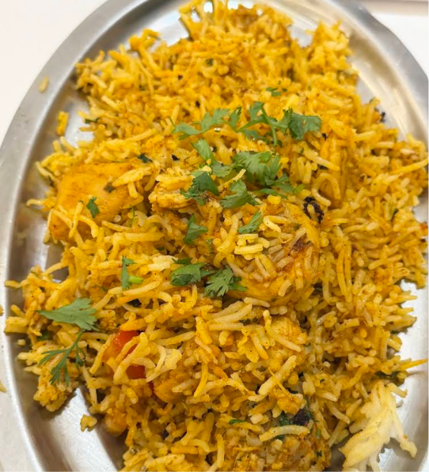
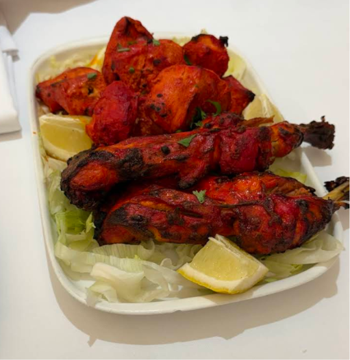
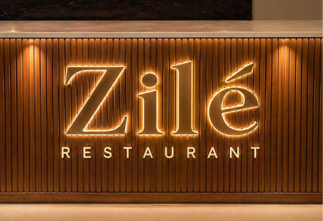

Chaville · 92370
Zilé
Restaurant Indien
Biryanis au safran, tandooris et currys parfumés, servis dans un écrin de bois et de lumière
La Maison
La cuisine indienne, servie avec soin
Chez Zilé, les grands classiques de la cuisine indienne — biryanis cuits à l'étouffée, viandes marinées au tandoor, currys mijotés — sont préparés avec des épices travaillées maison. Le tout se déguste dans une salle claire et apaisante, entre tasseaux de bois, arches douces et lumière dorée.
Sur place ou à emporter, midi et soir, sept jours sur sept : une table généreuse, pensée pour Chaville et ses environs.

La Carte
Biryanis, tandooris & currys
L'ensemble de nos plats, de l'entrée au dessert — la même carte que sur place.
Prix sujets à variation selon le marché.

Spécialités
Biryani & Poulet Tandoori
Deux plats signatures : le biryani, riz basmati au safran cuit à l'étouffée avec sa viande marinée, et le poulet tandoori, saisi au four après une longue marinade au yaourt et aux épices.
À découvrir sur place, midi et soir — pensez à réserver le week-end.
Réserver par téléphoneAvis
Ce que l'on dit de Zilé
« Le biryani est parfumé à souhait et le naan au fromage encore chaud. Une très belle adresse à Chaville. »
« Poulet tandoori fondant, service attentionné et cadre très soigné. On reviendra. »
« Des currys généreux et bien épicés, sans excès. La salle est claire et vraiment agréable. »
Contact
Nous trouver
- Téléphone
- 09 88 43 88 01
- Horaires
-
- Lundi — Jeudi11:00 – 15:00 · 18:00 – 23:00
- Vendredi11:00 – 15:00 · 18:00 – 23:30
- Samedi — Dimanche11:00 – 15:30 · 18:00 – 23:30